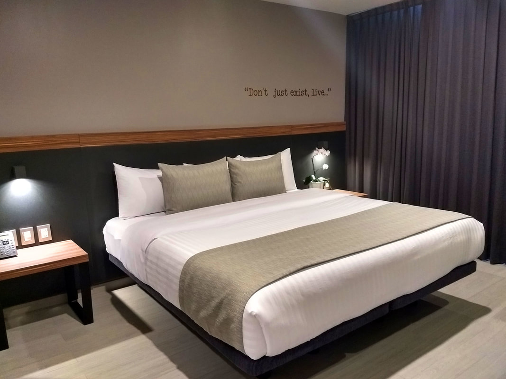
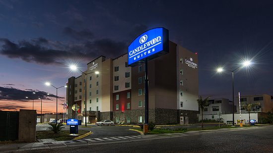

Sabemos que algunos de nuestros invitados vienen de afuera por eso queremos hacerles más fácil encontrar en donde quedarse. Nuestra recomendación es quedarse cerca de donde se encuentra el salón para que llegar después de una larga noche de fiesta no sea una gran odisea.
Aquí les dejamos una lista de los hoteles que les recomendamos junto con un link para hacer la reservación y la ubicación del lugar.
Las fotos que colocamos hasta abajo son de los primeros tres hoteles.
-
Misión Grand Juriquilla Querétaro
Blvd. Villas del Meson 56, Manzanares.
Página web
+52 442 234 0000 -
Hotel Bedford
Carretera Querétaro San Luis Potosi 14301.
Página web
+52 442 671 7901 -
Candlewood Suites Queretaro Juriquilla
Santa Teresa 502 Int. A, Fracc. Residencial Juriquilla Santa Fe.
Página web
+52 442 478 2000 -
Homewood Suites Queretaro
Gasa de Incorporacion a Carr. Queretaro-San Luis Potosí 631-C
Página web
+52 442 368 3030 -
Four Points by Sheraton Queretaro Norte
Carretera, El Salitre, San Luis Potosí - Santiago de Querétaro #13001
Página web
+52 442 103 3030 -
Fairfield Inn & Suites Queretaro Juriquilla
Av Paseo de la Republica y Fray Junipero Serra
Página web
+52 442 500 9100 -
Ramada Encore Queretaro
11515 Av. Paseo de la Republica
Página web
+52 442 690 9400 -
Hotel Zar Querétaro
Carr. Queretaro - SLP No. 11071
Página web
+52 442 218 5188 -
Holiday Inn Queretaro Zona Krystal
KM. 11, San Luis Potosí
Página web
+52 442 238 9900 -
Staybridge Suites Queretaro
Carretera San Luis Potosí-Querétaro 10685
Página web
+52 442 103 2900 -
City Express Querétaro Juríca
Av. 5 de Febrero No. 9200-A.
Página web
+52 442 103 3900
- 
- 